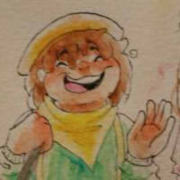

Me chamo Maria Luiza, mas pode me chamar de Malu ou
ML Duarte
Inicio minha jornada no mundo das imagens como ilustradora e artista conceitual. Trabalho com midias tradicionais, dentre aquarelas e lapis coloridos, e midias digitais, primariamente com Paint Tool Sai. Veja abaixo um pouco do que tenho feito
- Ilustradora
- Artista Tradicional
- Artista Digital
- Fotografa
- Night Owl
- Pessoa Estranha
Jogo desenvolvido no segundo semestre de meu Tecnólogo.
Inktober foi um projeto de 31 dias realizado em Outubro de 2017.
Algumas de minhas ilustrações digitais.
Algumas de minhas ilustrações tradicionais.
